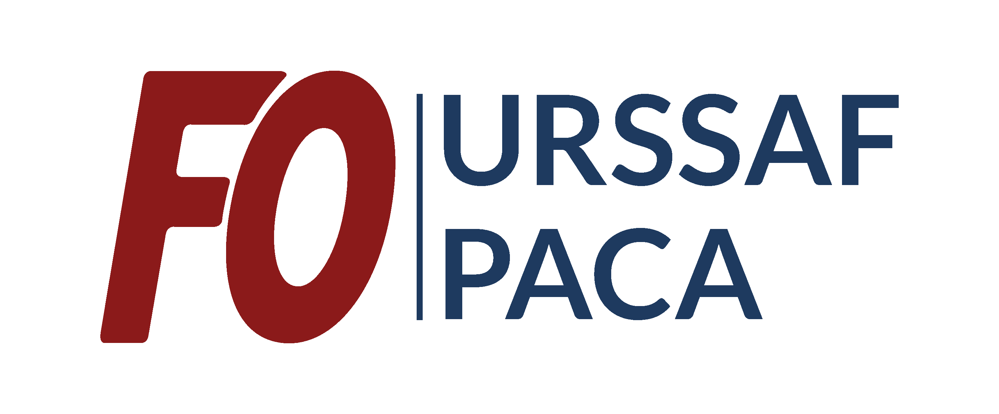

Accord signé le 4 août 2026 et agréé. Il s'applique pendant 3 ans à compter du déménagement sur Viton.
✊ Réalisé par FO URSSAF PACA — Votre syndicat vous informe et vous défendUne question sur votre situation, vos trajets ou une aide à demander ? Contactez vos délégués FO pour être accompagné(e).
Tous les salariés marseillais sont regroupés à Viton. Pour ceux de la Joliette, le trajet change du tout au tout.
De la Joliette, au nord de Marseille, vers le site de Viton (20 avenue Viton, 13009), au sud de la ville.
L'accord ne prévoit aucune prise en charge de frais de parking. Viton dispose d'un parking d'entreprise gratuit, et chaque salarié qui a demandé une place en aura une. Attention : l'attribution d'une place de parking exclut le 90 % et l'aide à la mobilité douce (voir « Cumuls et durée »).
Article 1 — L'accompagnement dans la sphère personnelle.
Le changement de site peut alourdir vos frais de garde d'enfants. L'employeur participe au surcoût causé par le changement de site, pendant la durée de l'accord.
Par déclaration dans l'outil DEA, avec vos justificatifs : votre ancien et votre nouveau contrat de garde, et vos factures. Une question, un doute sur votre situation ? Vos délégués FO vous accompagnent.
Article 2.1.1 — Au lieu des 75 % habituels.
Abonnement hebdomadaire, mensuel ou annuel, ou service public de location de vélos, pour vos déplacements entre le domicile et le site de Viton.
Votre trajet domicile / Viton en transports en commun :
→ dure au moins 1 h aller/retour ET s'allonge de plus de 30 minutes par rapport à votre trajet vers la Joliette ;
→ OU dure au moins 1 h 30 aller/retour.
Cette mesure ne se cumule pas avec la prise en charge des frais de tunnel, ni avec l'attribution d'une place de parking.
Article 2.2 — Pour ceux qui viennent en voiture.
L'employeur prend en charge les frais de passage des tunnels Prado-Carénage et Prado Sud pour vos trajets entre le domicile et Viton.
Votre trajet domicile / Viton en voiture :
→ dure au moins 1 h aller/retour, hors tunnels, ET s'allonge de plus de 30 minutes ;
→ OU dure au moins 1 h 30 aller/retour.
La direction vous remet un badge télépéage, à n'utiliser que les jours de travail, pour vos trajets entre le domicile et Viton. L'accord ne fixe pas de plafond.
Cette mesure ne se cumule pas avec le 90 % de l'abonnement transport, l'aide à l'achat d'un moyen de mobilité douce, ni le Forfait Mobilités Durables, sauf en covoiturage.
Article 2.1.2 — Vélo, vélo électrique, trottinette.
| Vous achetez… | Participation de l'employeur | Plafond |
|---|---|---|
| 🚴 Un vélo | 50 % | 200 € |
| ⚡ Un vélo à assistance électrique (VAE) | 50 % | 500 € |
| 🛴 Une trottinette électrique | 50 % | 200 € |
| 🪖 Un équipement de sécurité | — | 100 € |
L'aide est limitée à une seule participation par personne, pour toute la durée de l'accord.
Le matériel acquis devient la pleine propriété de l'agent. Il vous revient d'en assurer personnellement l'assurance et l'entretien.
Cette aide ne se cumule pas avec le 90 % de l'abonnement transport, l'attribution d'une place de parking, ni la prise en charge des frais de tunnel.
Article 2.1.3 — Rappel du barème de l'accord du 24 juin 2025.
| Fréquence d'utilisation dans l'année | Montant forfaitaire |
|---|---|
| 150 jours et plus | 600 € |
| 110 à 149 jours | 450 € |
| 80 à 109 jours | 300 € |
| 50 à 79 jours | 150 € |
| 20 à 49 jours | 75 € |
Le FMD suit ses propres règles, y compris pour le cumul avec la prise en charge de l'abonnement transport. Voir la fiche Forfait mobilités durables. Seule précision de cet accord : le FMD ne se cumule pas avec les frais de tunnel, sauf en covoiturage.
Pour vos trajets, vous choisissez une seule voie : les transports en commun, la mobilité douce ou la voiture par les tunnels.
| Mesure | Ne se cumule pas avec… |
|---|---|
| Abonnement transport à 90 % | Frais de tunnel · place de parking attribuée |
| Aide à l'achat mobilité douce | 90 % · frais de tunnel · place de parking attribuée |
| Frais de tunnel | 90 % · mobilité douce · FMD (sauf covoiturage) |
| Forfait Mobilités Durables | Frais de tunnel (sauf covoiturage) · règles de l'accord FMD |
| Frais de garde d'enfants | Se cumulent avec tout |
Entrée en vigueur à la date définitive du déménagement sur Viton (et au plus tôt le premier jour du mois qui suit l'agrément), pour une durée de 3 ans. L'accord prend fin de plein droit à son terme : il n'y a pas de reconduction automatique.
Les remboursements se demandent par déclaration dans l'outil DEA, sauf pour les tunnels, couverts par le badge télépéage. Gardez vos justificatifs : abonnement, factures, contrats de garde.
Une commission de suivi réunit la direction et les organisations syndicales représentatives une fois par an. Vos élus FO y siègent : faites-leur remonter vos difficultés.